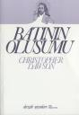

- Digg menü benzerini CSS ile oluşturulması. Bağlantı
- overflow yardımı ile resim galerisi. Bağlantı
- ie için PNG düzelmelerinden biri. Bağlantı
- 50+ adet jQuery uygulaması. Bağlantı
- "jQuery ve ajax işlemleri" Bağlantı
- javascript kütüphanelerinden YUI 2.5 sürümü çıkmış. Bağlantı
- 3 tane javascript ipucu. Bağlantı
- Asp.net'de jQuery kullanımı. Bağlantı
- Ajax ile ...
Batının Oluşumu - Christopher DAWSON
Batının oluşumunu incelemek AB'ye girmeyi planladığımız şu günlerde biraz daha önem kazanmaktadır. AB'ni oluşturan unsurlar ve kökenlerini anlatan güzel bir kitap. Batıyı oluşturan etkenleri incelerken batının daha önce birliği sağladığı veya sağlamaya çalıştığı devirlerede göz atıyoruz. AB'ne girelim diyoruz ama kimlerle veya hangi kültür ile kaynaşacağız? Bu ...
devamını okuFirefox'da satıriçi(inline) elemanların padding-right sorunu
Şimdiye kadar hep Internet Explorer ile ilgili sorunlara değindim. Şimdi ise size en çok sevdiğim tarayıcı Firefox'un küçük bir sorununu aktarmaya çalışacağım. Amaç sorunu bilip ona göre kod yazmak.
Birden fazla satır içeren satıriçi(inline) elemanlara padding-right değeri atandığında, satıriçi elemanın sonuna padding-right değeri eklenir. Firefox 2 ve alt ...
devamını oku11 Şubat Web'den seçme haberler
- Asp.net performansını arttıracak ve esneklik sağlayacak 10 öneri. Bağlantı
- VS.NET 2008 yenilikleri hakkında geniş kapsamlı bir makale. Bağlantı
- Filtrelenebilir GridView görünümünü CSS ile düzenlemek. Bağlantı
- Lorem ipsun dan sıkıldım diyenler için, farklı bir yapay metin sitesi. Bağlantı
- Güzel ve küçük boyutlu bir HTML editör örneği Bağlantı
- 25 adet ...
WordPress sürümün yükselttim.
Bu haftasonu WordPress sürümünü son sürüm olan 2.3.3 yükselttim. Tabi her zaman ki gibi yine bir kaç sorunla karşılaştım. WordPress otomatik yükseltme eklentisini kulanarak bir yükseltme yaptım. Türkçe karakterlerde sorunlarım çıktı. WordPress Türkiye sitesinden Türkçe sürümünü indirip yükledim sorun düzelmedi. Anladım ki sorun veritabanında değil sayfaya basan php ...
devamını oku07 Şubat web'den şeçme haberler
- Dreamweaver ile javascript kütüphaneleri kolay kullanmamız için güzel bir eklenti hazırlamışlar. Artık dw javascript kütüphaneleri ile çalışmak daha kolay. Bağlantı
- Google'dan farklı arama araçları. Bağlantı
- Yahoo javascript kütüphanesinden CSS sayfa iskeleti oluşturma aracı. Bağlantı
- CSS3 ile birlikte gelen sözde seçicisi :target hakkında güzel bir makale. Bağlantı
- Etkileyici web sayfası ...
01 Şubat 2008 web'den seçme haberler
- line-height ve menülerde kullanımı. Bağlantı
- Tarayıcı test aracı AcidTest3 artık yayında. Firefox 2(%51), IE7 (%13), Safari3 Beta(%39) ve Opera9.25 (%47) Bağlantı
- Float kullanmadan CSS ile sayfa kodlamak. Bağlantı
- CSS temizleme ve optimize etme araçları. Bağlantı
- Eric Meyer tarayıcıların zaman çizelgesini çıkarmış. Hoş görünüyor. Bağlantı
- WordPress hızını arttırmanın ...
29 ocak 2008 web'den seçme haberler
- W3C'nin içeriğini Türkçeye çevirmişler. Gerçekten güzel bir doküman
olmuş. Bu kadar geç fark etmem çok büyük kayıp. CSS kitabımı
yazarken Türkçe terimler ve içerğinden yaralandım. Bu arada CSS
kitabımın birincisini yakında yayınlıyorum. Bağlantı
- SitePoint'den çevrimiçi CSS kitabı. Bağlantı
- Web programcıları için güzel bir link arşivi sitesi. Bağlantı
- "Google ...
- W3C'nin içeriğini Türkçeye çevirmişler. Gerçekten güzel bir doküman
olmuş. Bu kadar geç fark etmem çok büyük kayıp. CSS kitabımı
yazarken Türkçe terimler ve içerğinden yaralandım. Bu arada CSS
kitabımın birincisini yakında yayınlıyorum. Bağlantı
26 Ocak 2008 Web'den Seçme Haberler
- HTML 5 çıktı. Uzun zamandır üzerinde çalışılan 5. sürümü sonunda çıktı. Bağlantı HTML4 ve HTML5 arasındaki farklar. Bağlantı
- "ASP.NET Compile Seçenekleri" Bağlantı
- Em tabanlı site kodlamak. Bağlantı
- "FeedBurner Kullanmanın 5 Temel Faydası" Bağlantı
- jQuery yardımı ile kolay uygulanabilir kaydırma çubuğu(scroll) scripti. Güzel çalışma Bağlantı
- 12 Adımda profesyonel web ...
21 Ocak Web'den Seçme Haberler
- Tabloları daha anlaşılır yapmak için fare imleci hangi satır üzerine geldi ise o satırının tamamını farklı zemin rengi ile belirterek tablo okunabilirliğini arttırırız. Son zamanlarda bunu daha gelişmişini sitlerde görmeye başladım, bana da lazım oldu açıkçası, hem satır hemde kolon seçili hale getirilerek daha anlaşılır tablolar elde edebiliyoruz. Bunun için ...